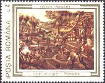

|
Victor Manta, Switzerland |
|
 |
I'm a Swiss
stamp collector, born in 1944, married and father to a daughter. I hold a Master degree in physics and I'm specialized in technical management. About 35 years ago I have chosen the Arts on Stamps as my main philatelic area of interest, but other topics interest me as well. One of these is the history as seen through the stamps of issuing countries. In February 2001 I have founded the Philatelic Webmasters Organozation (PWO), being its current President and one of its principal animators. |
|
I'm member of the Union of Swiss Philatelic Associations. In 1996 I have
founded the Paintings and Arts on Stamps Internet Club (PASIC), an association
that was joined by over 300 members from over 50 countries. PASIC is
affiliated with the biggest topical association worldwide, the ATA
(American Topical Association). My other domains of interests are computers, visual arts, music and philosophy. As other hobbies I would mention webmastering, tennis and table tennis (playing as much as watching). The page below is a also a sign of my special interest for Romania, for its history and its stamps. |
 |
SHOT PAINTINGS
 |
|
|||
 |
 |
On the
paintings displayed on the right you can see the impacts of bullets.
The stamps of a rather inferior quality, as compared with the stamp on the left side,
This stamp on the right was issued by the same country 22 years earlier,
in 1968.
This masterpiece of Romanian art was painted by
Stefan Luchian and represents Old Nicholas, the Cobza (Zither) player. Scott
numbers: 2000 and 3620. In the meantime the painting was
restored and is exhibited at the National Museum of Arts in Bucharest,
Romania.

This page displays all other stamps of the set, as
follows:
I'm sure that one day, eventually with the help of international specialists, all these wonderful works of art will be restored and that I'll have the pleasure to show you them in their original state. |
|
|
 |

All in all an impressive set, acting as a memory flash and revealing a short piece of recent history that has shaken one more country in the tormented Balkan Peninsula.
|
|

This wasn't for the first time that Romanian masterpieces or their legal
holders suffered. In the year 1956, after 39 years, the
government of the former USSR returned to Romania works of art that were evacuated in 1917 during the WW I by the
Romanian government. Among these works were also the paintings of the
renown Romanian artist Ion Andreescu. Unfortunately, when they come back,
the Romanian specialists discovered that many of these paintings were
replaced by fakes.
Of course nothing could be done against the great "friend" and
"liberator" from the East. Source: Ioan Andreescu, p.9. ALCOR
EDIMPEX, June 1997, ISBN 973-97901-4-3. Actually, this hasn't hindered and has even
encouraged the Romanian communist government to requisition, during the mentioned 45
years of dictatorship, numberless works of art from their legal,
private owners.
SHOT - THEN SURCHARGED !
Roughly 10 years after their issue, the first five values of the set were overprinted and surcharged with a new value of Lei 1700. This value corresponded in the year 2000 to the fee for a domestic letter. The old face value was covered by a black image of an easel, in the "tradition" of all recent overprints of the Romanian post.

To cheer up the things, during a trip to Romania I let cancelling a whole set
on a letter. I have chosen a date that tells something to me, that of September 19, 2000,
the day of my birth anniversary. The clerk at the postal office No. 45, on the Brezoianu Street in
Bucharest, has done it with a lot of professionalism and even with an obvious
pleasure when I have told her why have I chosen that very day.
Please
notice that the value of Lei 5 wasn't surcharged, because it was
already out of stock, due to its limited printed quantity of only 250,000, as
compared with 800,000 to 3,000,000 pieces for the other stamps of the set.
The image
above shows only the upper part of the cover, that has in its bottom part other
two stamps, in order to attain the value of Lei 12,300, the price of an air mail
letter sent from Romania to Switzerland. Actually a quite high price for the
year 2000's income of most Romanians.
Note: Pages of other PWO members will follow soon.